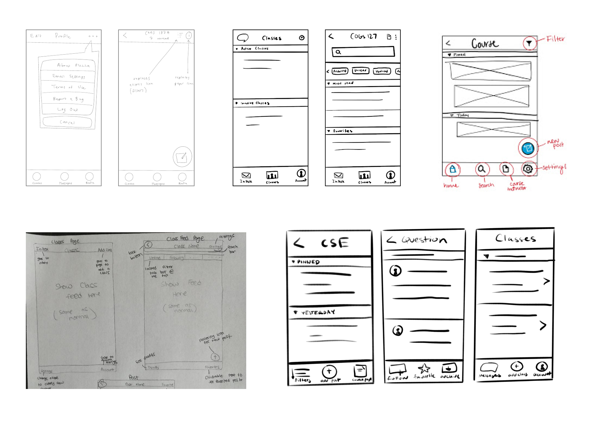

Project Overview
2 Weeks (Dec 2020)
Team of 5 | UX Researcher, UI/UX Designer
Piazza is an online collaborative space for students to ask questions and receive information from their instructors and each other. Although this application is widely used by college instructors and students, its usability issues make users hesitant to fully use its features. The current mobile version contains components that make using it as a discussion forum difficult. We wanted to redesign the Piazza mobile application such that it is easy to navigate and efficiently perform the actions that users desire.
User Testing - Round 1
We recruited four college student participants for this user testing phase. As the main demographic of Piazza, these participants helped identify the breakdowns that different users can come across while using the mobile application.
We asked each user to perform the main tasks that Piazza is used for and had them think aloud for us to understand their thought process for each action taken. After this testing, we identified the main three usability errors for all participants:
1) Consistency and Standards
- The icons are not intuitive to the users - two users were hesitant to use the icons because they did not understand what they represented
- Piazza utilizes the same design for different features which makes it difficult for users to understand their functions before use
- All users were confused with the Piazza wording at some point in their testing - Wording is ambiguous and difficult to differentiate
2) Recognition Rather than Recall
- It is not obvious where to find certain features such as favorites or email settings - users have to remember these locations after searching for them
- Piazza consistently utilizes the ellipsis as an indication of ‘more’ features but the features included are not obvious to the user, it isn’t labeled to aid understanding
2) Visibility of System Status
- Actions such as creating a draft or favoriting a post do not have a confirmation or indication of where a user may find these features to return to
- When a user uses the search function without results, there are no next steps indicated to help the user find what they need
Considering these main usability errors, we decided that users most need assistance navigating through the application and understanding the actions available to them. Focussing on these improvements will enhance the application’s usability by creating a consistent system to increase user efficiency and comprehension.
Redesign Component
The single component that would have the greatest effect on the issues described previously was decided to be the ellipsis icon that is present on most screens of the application.
Ellipsis icon (...) is inconsistent and unintuitive in what settings it controls since its function changes depending on the page that it is on.

We compiled the difficulties with the ellipsis icon that all users struggles with during user testing to aid our redesign of the component:
1) Avoids using the ellipsis icon
Upon being asked to follow a post, two participants did not choose the ellipsis button and instead clicked the star which allows a user to favorite the post. It is not obvious to the user that they must click on the ellipsis to find more options.
2) Uses the ellipsis icon as the last option
One participant repeatedly used the ellipsis for features that they couldn’t find on the main screens as the backup option. The ellipsis icon changes functionality on each page and acts as a general location for extra features. These features aren’t clearly indicated to be accessible by this icon and leaves the user to guess what it does.
3) Unable to remember the features in the ellipsis icon
One participant had a tough time remembering all the options in the ellipsis menu and would click on it multiple times to check if they missed something.
Competitive Analysis
We analyzed the strengths and weaknesses of three different applications and their solutions to usability issues of navigation and user action. From these analyses, we identified several opportunities that could assist the improvement of the Piazza app when implemented to the design.
Strengths
- Bottom navigation is easier for users to find desired pages
- Icons are unique to their function to avoid guessing
Weaknesses
- Potential for too many icons that can confuse the user
- Icons are not labeled
Opportunities
- The Piazza ellipsis icon can be changed to various unique icons in consistent locations
- A secondary menu icon can present the user general settings along with the primary navigation bar
Canvas
Strengths
- Bottom navigation bar to reach the most relevant screens
- Labeled icons to increase user understanding
Weaknesses
- Limited space for limited icons
- Lack of efficient search function
Opportunities
- A bottom navigation would allow the user to access primary pages with specified functions
- Features can be organized into consistent locations
Slack
Strengths
- Floating action button is intuitive
- Conventional and unique icons
- Bottom nav bar with labeled icons
Weaknesses
- Low contrast between the components - difficult to see buttons for some users
Opportunities
- Since Slack’s channel information is similar to Piazza’s course information, the info icon may be a solution to users having trouble finding the course information page
UI Sketches
Utilizing the data from our user research and our competitive analysis, we created several UI sketches of an improved Piazza app focussed on navigation and icon placement for ease of use and understanding.
High Fidelity Prototypes
We designed two prototypes based on two different approaches: a task bar and a navigation bar. We also experimented with different icons for each prototype.
Prototype #1 - Task Bar
This prototype utilizes a combination of a bottom navigation and an task bar that adapts to the present screen.
- All screen relevant actions are accessible by the task bar to reveal possible actions ot the user
- Icons are accompanied by unique label to increase user confidence and understanding
The goal of this prototype was to help the user understand the possible actions to be taken throughout the app instead of hiding them in the ellipsis icon like on the original design. It makes navigation through the app more consistent and possible actions more clear.
Prototype #2 - Navigation Bar
This prototype utilizes a single navigation bar throughout the application.
- Floating action buttons are obvious to the user for efficient performance
- Features of the ellipsis icon can now be found elsewhere on the screen as more relevant icons or buttons
- Dropdown filter demonstrates its function and current system status
The goal of this prototype was to create a consistent and reliable system that is familiar and intuitive to the user. Navigation and actions are more obvious by maintaining both location and function.
User Testing: Round 2
We conducted user testing on our high fidelity prototypes in order to assess the redesigns' breakdowns and successes.
We observed four users while they performed the same tasks on the two diffrent prototypes. By doing so, we were able to compare the usability of each prototype to aid our final recommendations for an optimized component for Piazza.
Prototype #1 - Task Bar
Successes
- The bottom task bar made it obvious which actions were available on each page - user liked that they didn’t have to search for buttons
- Icon labels made users more confident in their button presses
- Adding icons for functions that did not previously have icons made the app design itself feel more uniform
Breakdowns
- The changing navigation bar made it confusing going from page to page - user was not sure what icon would be on the task bar for each page
- The course page icon and label was ambiguous, a user thought that it might return them to the previous course page rather than course information
Prototype #2 - Navigation Bar
Successes
- Consistent navigation bar was familiar to users and increased ease of use
- The floating icon were appealing and easy to understand
- Dropdown Filter increased user selection speed - One participant liked that you can always see which filter is active
Breakdowns
- Buttons and icons differ in location and may require scanning by user
- Usage of ellipsis on a single page was still ambigious to the user - issue similar to original design
Lessons Learned
- Users prefer consistency within an application, meaning most components should not change from page to page
- Having icons that are related to its functionality yields to higher recognizability and allows user to complete their tasks in an easier manner
- Explicitly naming and showing options are appealing to users since they are able to immediately see their options and therefore more easily complete tasks
Design Recommendations
Our final recommendations would be to add a bottom navigation bar that is consistent all throughout the application. By doing so, users will have a reliable system to find or return to their desired page. In addition to a bottom navigation bar, there should also be an implementation of more intuitive icons that allow the user to immediately recognize the function of the icon. These icons should also have distinct labels to prevent any ambiguity. A filter dropdown is also recommended on the course posts page to help the user identify the usable filters and effectively sort their posts.
Personal Reflection
Throughout this project, I had the pleasure of working with four other wonderful designers and loved the experience of an expidited design. With only two weeks at hand, we were able to deeply analyze and user test the Piazza application and develop solutions to the selected usability issue. This project cemented my belief in the signifance of having a thourough plan at the beginning of the process. I am very proud of our team's efficiency and am excited for another opportunity in the future to push pass the limitations presented to me!